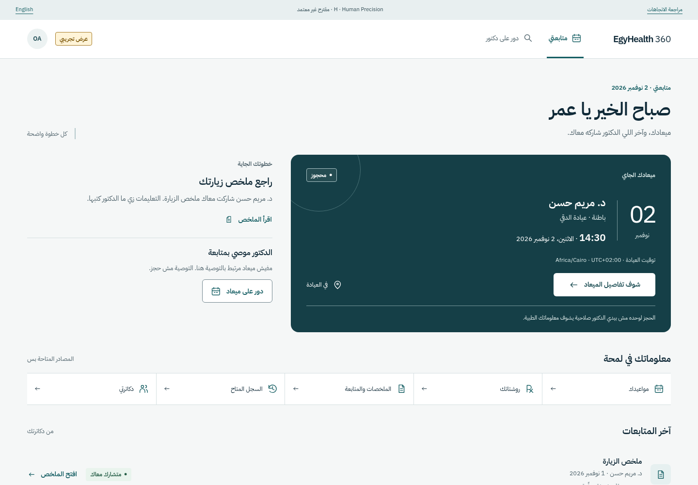
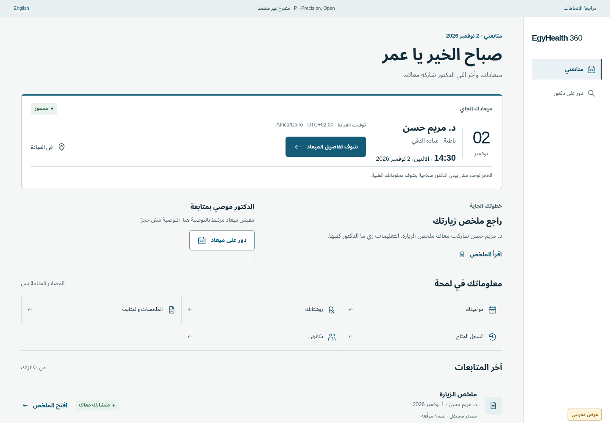

H / RECOMMENDED FOR OWNER SELECTION
Human Precision
E’s authored Arabic and attentive patient rhythm. D’s ruled source hierarchy. F’s persistent context, expressed on light surfaces.

DESIGN FOUNDATION / 06 NOVEMBER 2026
A shared identity for people receiving care and the professionals responsible for it. Two coherent finalists, one considered recommendation.
Exploratory, synthetic and isolated. No Final Brand, logo, font, component API or product decision is frozen.
H / RECOMMENDED FOR OWNER SELECTION
E’s authored Arabic and attentive patient rhythm. D’s ruled source hierarchy. F’s persistent context, expressed on light surfaces.

P / CHALLENGER
A quieter rail and calendar-led composition, with one continuous care plane. Less service expression, more repeatable scanning.

ONE IDENTITY / DIFFERENT RESPONSIBILITIES
English and challenger equivalents are linked in the complete screen inventory. Operations remain honest non-working specimens.
THE RECOMMENDATION
H best balances the accepted calm, attentive and precise personality across both roles. Its advantage is composition and source clarity—not a new color. P remains a credible choice when operational neutrality matters more.
Owner options: H / P / reject both / named hybrid. Logo and typography choices remain separate. The next phase starts only after visual-DNA selection.
Read the scorecard, evidence and tradeoffs